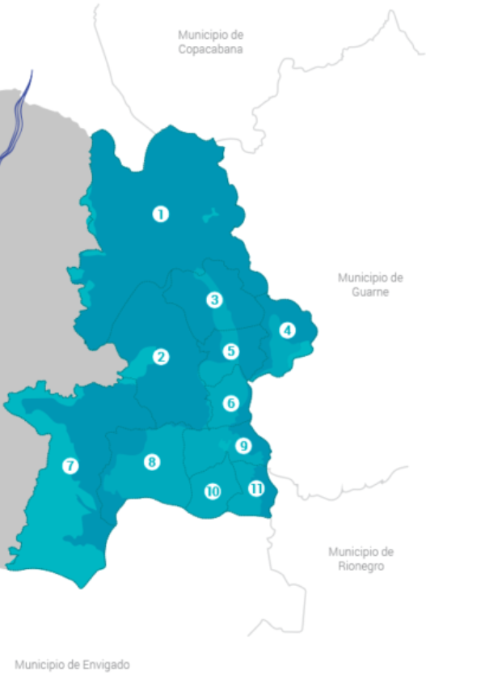

¿Quienes Somos?
Pandora Operador Turístico nace después de la pandemia en el año 2021,
en el corregimiento de Santa Elena-Medellín, Colombia.
Detectamos una necesidad en el territorio ya que solo es conocido en
las ferias de las flores, más no por todo el potencial que tiene en
actividades ecológicas, hermosos hospedajes y su exquisita
gastronomia.
Nuestro objetivo es darlo a conocer fortaleciendo la economia del
territorio, aliandonos con ellos, entre nuestras alianzas tenemos a
Trasancoop la empresa de transporte del corregimiento, La Coorporación
de Silleteros, alianzas con guias, productores, restaurantes y
hospedajes de la zona. Tambien pertenecemos a la Red Turística del
corregimiento para poder llevar a cabo nuestro objetivo.